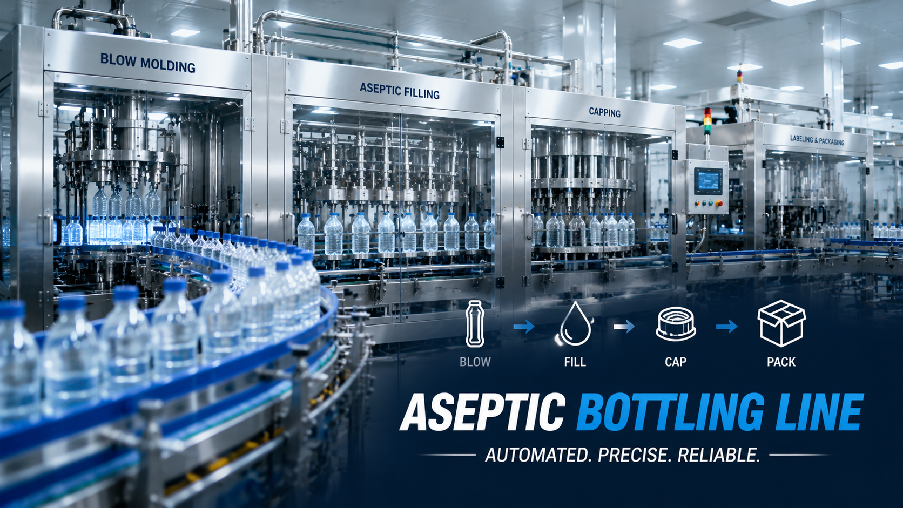

Automated Conveyor System for Beverage Production Line | Smart Factory Material Handling Solution

Summary
Modern manufacturing factories require efficient internal logistics systems to maintain continuous production and reduce unnecessary manual handling.
This project showcases an automated conveyor system designed for bottled water and beverage production lines, providing stable product transportation between production equipment, packaging areas, inspection stations, and warehouse zones.
The system demonstrates how automated material handling improves factory efficiency by creating a seamless connection between production processes.
Although this solution is widely used in beverage manufacturing, the same automation concept can also be applied to food, pharmaceutical, consumer goods, and other industrial production environments.
By integrating conveyor automation with production lines, factories can achieve higher productivity, improved workflow control, and better scalability for future expansion.
Technology
- Factory Material Handling Automation Technology
- This project integrates:
- → Automated Conveyor System：
- Bottle conveyor transportation
- Continuous product movement
- Production line connection
- Buffering and transfer system
- → Smart Production Logistics：
- Automated material flow
- Production synchronization
- Process connection
- Factory layout optimization
- → Factory Automation Integration：
- Filling line connection
- Packaging line connection
- Inspection station integration
- Warehouse transfer interface
- → Future Smart Factory Expansion
- Compatible with:
- Robot palletizing system
- AGV/AMR transportation
- ASRS automated warehouse
- MES production management system
Challenge
Improving Factory Efficiency Beyond Production Speed
In modern beverage manufacturing, increasing production speed is only one part of improving factory performance.
Many factories face challenges in internal material transportation:
1. Manual Handling Dependency
Traditional transportation methods often require workers to manually move products between production processes.
This creates:
Higher labor requirements
Increased operational costs
Lower production flexibility
2. Production Flow Interruptions
Without an optimized logistics system, production efficiency can be affected by:
Product accumulation
Transportation delays
Unbalanced production processes
3. Difficulty in Factory Expansion
When production capacity increases, traditional manual transportation systems become difficult to scale.
Factories need a flexible logistics solution that can support:
Higher output
Multiple production lines
Future automation upgrades
Solution
Automated Conveyor System for Continuous Production Flow
The project introduced an automated conveyor transportation system designed to connect different production stages.
The solution creates a continuous material flow:
Production → Transportation → Packaging → Inspection → Storage
Main solution components:
Automated Product Transportation
The conveyor system automatically transfers bottled products between different processing areas, reducing manual movement.
Production Line Integration
The conveyor system is synchronized with upstream and downstream equipment to maintain stable production flow.
Flexible Factory Logistics
The layout can be customized according to:
Factory space
Production capacity
Product type
Future expansion requirements
Smart Factory Upgrade Capability
The system can be further integrated with:
Robot palletizing
Warehouse automation
Digital production management
Workflow & Layout
Beverage Production Material Flow：
Bottle Production / Filling
↓
Automatic Conveyor Transportation
↓
Inspection Area
↓
Packaging System
↓
Sorting & Transfer
↓
Palletizing Area
↓
Warehouse Storage
↓
Distribution
The conveyor layout is designed according to factory workflow, minimizing unnecessary transportation distance and improving production efficiency.
Results & ROI
- By implementing automated conveyor transportation
- manufacturers can achieve:
- → Improved Production Efficiency：
- Continuous product movement
- Reduced production interruption
- Better workflow coordination
- → Reduced Labor Dependency：
- Less manual transportation
- Lower repetitive labor requirements
- Improved workplace safety
- → Better Factory Utilization：
- Optimized production layout
- More efficient space usage
- Easier future expansion
- → Improved Manufacturing Stability：
- Consistent transportation speed
- Reduced human operation errors
- More predictable production performance
Equipment List
- Complete conveyor automation system may include:
- → Conveyor Equipment:
- Bottle conveyor system
- Belt conveyor
- Roller conveyor
- Chain conveyor
- Transfer conveyor
- → Production Integration Equipment:
- Filling line connection
- Packaging line connection
- Inspection station interface
- Sorting system
- → Automation Components:
- PLC control system
- Sensors
- Motor control units
- Safety protection system
- → Optional Smart Factory Equipment:
- Robot palletizing system
- AGV/AMR transportation
- ASRS automated warehouse
- MES production monitoring system
Project Overview / Opening
Building a Connected Manufacturing Logistics System
A modern factory is not only defined by its production machines.
The efficiency of material flow between different processes directly impacts production capacity, labor cost, and operational stability.
This automated conveyor system demonstrates how manufacturers can transform traditional transportation methods into an integrated factory logistics solution.
From beverage production lines to complete smart factories, automated material handling creates the foundation for efficient and scalable manufacturing.
Key Points
- Key Advantages of Automated Conveyor Systems
- ✔ Continuous production flow
- ✔ Reduced manual transportation
- ✔ Improved production efficiency
- ✔ Better factory layout utilization
- ✔ Stable product handling
- ✔ Easy integration with automation equipment
- ✔ Supports future smart factory upgrades
- Applicable Industries：
- Beverage manufacturing
- Food processing
- Pharmaceutical production
- Consumer goods
- Electronics manufacturing
- Packaging industries
Implementation / Workflow
Project Implementation Process
Step 1: Factory Requirement Analysis
Evaluate:
Production capacity
Product characteristics
Factory layout
Transportation requirements
Step 2: System Design
Develop:
Conveyor layout
Material flow plan
Equipment configuration
Step 3: Equipment Integration
Complete:
Conveyor installation
Production line connection
Control system setup
Step 4: Testing & Optimization
Verify:
Transportation stability
Production synchronization
System reliability
Step 5: Production Operation
Provide support for:
System operation
Optimization
Future automation expansion
Customer Value / Results
For factory owners and production managers, automated conveyor systems provide long-term business value:
Lower Operating Costs
Reducing dependence on manual transportation helps manufacturers control increasing labor costs.
Higher Production Efficiency
A continuous logistics flow allows production equipment to operate closer to maximum capacity.
Better Factory Management
Standardized material movement improves production visibility and operational control.
Future Automation Foundation
The conveyor system becomes a key connection point for future upgrades including robotics, warehouse automation, and smart factory systems.
Conclusion / Next Step
Automated conveyor systems are more than transportation equipment. They are an important part of modern factory automation, connecting production processes and creating a more efficient manufacturing workflow.
From beverage production lines to complete smart factory projects, we help manufacturers worldwide design, source, integrate, and deliver industrial automation solutions by leveraging China's manufacturing ecosystem.
Our capabilities include:
Production line automation
Conveyor and material handling systems
Packaging automation
Industrial robotics
ASRS automated warehouse integration
Smart factory solutions
Whether you are building a new factory or upgrading an existing production facility, our team can help evaluate your requirements and develop a customized automation solution.
📩 Visit our Contact page and submit your project requirements to discuss your production line automation, factory upgrade, or material handling project.
SEO Title
Automated Conveyor System for Beverage Production Line | Smart Factory Material Handling Solution
SEO Description
Modern manufacturing factories require efficient internal logistics systems to maintain continuous production and reduce unnecessary manual handling.
This project showcases an automated conveyor system designed for bottled water and beverage production lines, providing stable product transportation between production equipment, packaging areas, inspection stations, and warehouse zones.
The system demonstrates how automated material handling improves factory efficiency by creating a seamless connection between production processes.
Although this solution is widely used in beverage manufacturing, the same automation concept can also be applied to food, pharmaceutical, consumer goods, and other industrial production environments.
By integrating conveyor automation with production lines, factories can achieve higher productivity, improved workflow control, and better scalability for future expansion.
Related Blog
Start with Your Business Challenge
Tell us about your warehouse, factory, or production requirements. We'll help you explore practical automation solutions and relevant project references.